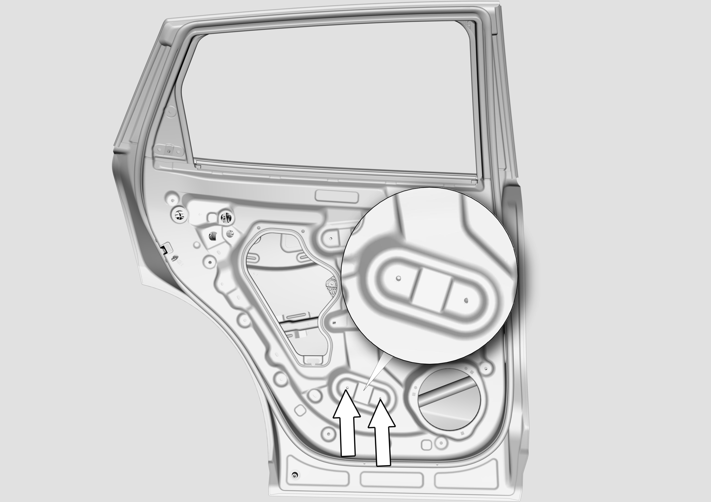
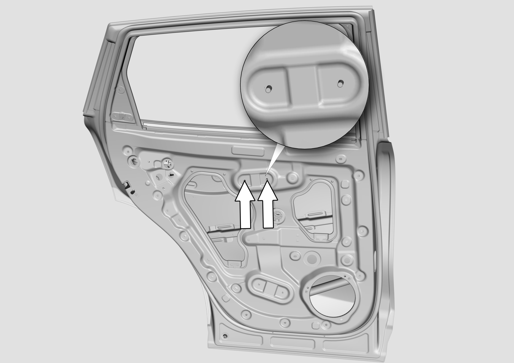
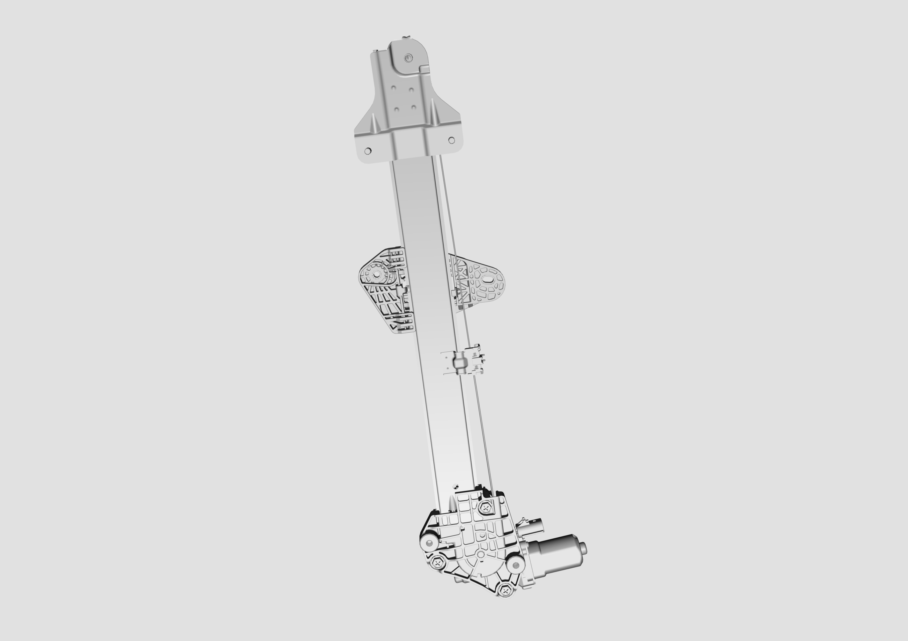

Снятие
Здесь описаны Снятие и Установка стеклоподъемника левой задней двери, снятие и установка стеклоподъемника правой задней двери выполняются в целом аналогично.
Снять стекло задней двери. Снятие и установка облицовочной панели задней двери
С помощью торцевой головки № 10 ослабить крепежную гайку мотора стеклоподъемника задней двери (см. расположение на фрагменте с увеличением). Момент затяжки гайки при установке: 9 ± 1 N.m.

С помощью торцевой головки № 10 ослабить крепежную гайку стеклоподъемника задней двери в месте, указанном "стрелкой". Момент затяжки гайки при установке: 9 ± 1 N.m

Извлечь стеклоподъемник задней двери.

Установка
Установка в целом выполняется в обратном порядке, при этом обратите внимание на следующие меры предосторожности.
1. До и после установки стеклоподъемника необходимо за счет подъема и опускания стекла удерживать монтажное отверстие стеклоподъемника в пределах технологического отверстия для установки стекла.
2. После завершения установки выполнить функциональное тестирование стеклоподъемника.
3. После завершения сборки необходимо выполнить самообучение стеклоподъемника.